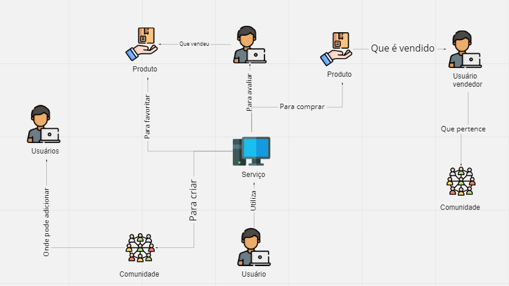
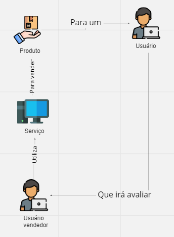

Rich Picture
1. Histórico de versão
| Versão | Data | Descrição | Autor |
|---|---|---|---|
| 0.1 | 02/02/2022 | Criação da documentação relacionada ao Rich Picture | Mateus Gomes e Juliana Valle |
| 0.2 | 02/02/2022 | Adição dos rich pictures individuais e metodologia | Mateus Gomes |
| 0.3 | 02/02/2022 | Adição da referência e legenda nas imagens | Mateus Gomes |
| 0.4 | 02/02/2022 | Adição da definição | Mateus Gomes |
| 0.5 | 03/02/2022 | Adição da versão final do rich picture | Juliana Valle |
| 0.6 | 21/02/2022 | Atualização do caminho das imagens | Paulo Victor |
2. Definição
O Rich Picture é uma modelagem informal e com uma linguagem acessível, cuja notação permite analisar problemas e expressar ideias. Este modelo auxilia na identificação de processos de negócio e seus requisitos, os atores envolvidos no produto e suas responsabilidades e os relacionamentos entre os processos e os atores.
3. Metodologia
Cada membro da equipe elaborou um Rich Picture para o projeto, com o objetivo de compilar os resultados obtidos e gerar uma versão final. Os artefatos foram elaborados de forma digital, utilizando plataformas como o Figma e o Whimsical.
4. Resultados Individuais
4.1 Rich Picture 1
Autor: Daniel Barcelos
4.2 Rich Picture 2
Autor: Denys Rogeres

4.3 Rich Picture 3
Autor: Juliana Valle
4.4 Rich Picture 4
Autor: Mateus Gomes
4.5 Rich Picture 5
Autor: Matheus Afonso


4.6 Rich Picture 6
Autor: Paulo Victor
4.7 Rich Picture 7
Autor: Thiago Mesquita
4.8 Rich Picture 8
Autor: Victor Gonçalves
4.9 Rich Picture 9
Autor: Vinícius Saturnino
5. Resultado Final
5.1 Versão Final
Para a confecção deste Rich Picture, foram utilizados os rich pictures individuais e adaptados para contemplar o projeto de maneira mais fidedigna. Os componentes são explicados na legenda a seguir.
5.1.2 Legenda
6. Referências
[1] Young, Ralph. Requirements Engineering Handbook. Norwood, US: Artech House Books, 2003.
[2] Leite, Julio Cesar Sampaio do Prado. Livro Vivo - Engenharia de Requisitos. Disponível em: http://livrodeengenhariaderequisitos.blogspot.com.br/
[3] Chemuturi, Murali. Mastering Software Quality Assurance : Best Practices, Tools and Technique for Software Developers. Ft. Lauderdale, US: J. Ross Publishing Inc., 2010.